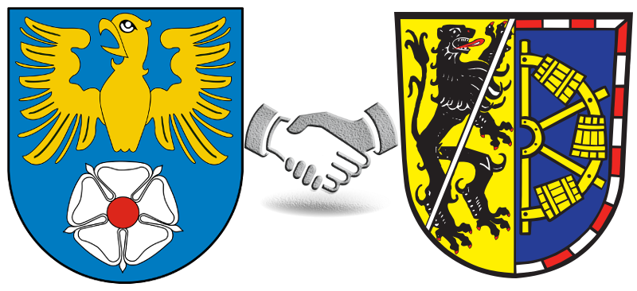

Powiat Erlangen-Höchstadt od 2005 roku jest powiatem partnerskim polskiego powiatu Tarnowskie Góry.
Powiat Tarnowskie Góry leży w górnej części Górnośląskiego Okręgu Przemysłowego i składa się z dziewięciu gmin, z których cztery mają prawa miejskie. Graniczy z powiatami Będzin, Lubliniec i Gliwice.
Powiat tarnogórski ma prawie 143 tysiące mieszkańców i zajmuje 646 kilometry kwadratowe. 45 procent ludności powiatu mieszka w Tarnowskich Górach. 21,5 procent ludności powiatu to dzieci i młodzież.
Między powiatami Erlangen-Höchstadt i Tarnowskie Góry odbywają się wymiany uczniów i studentów.